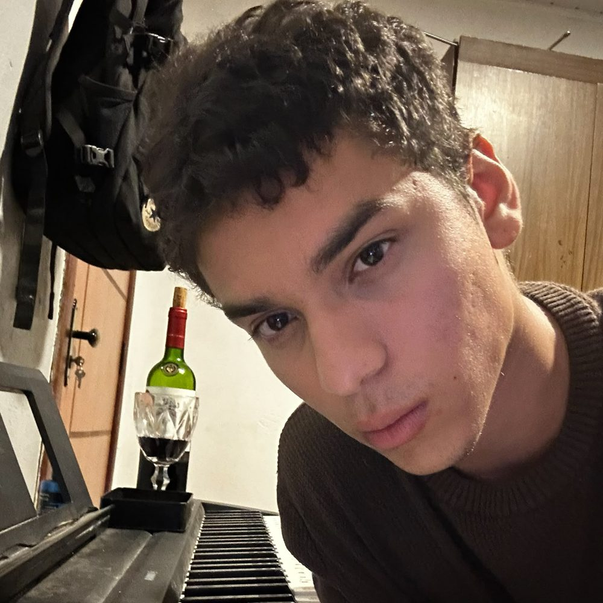
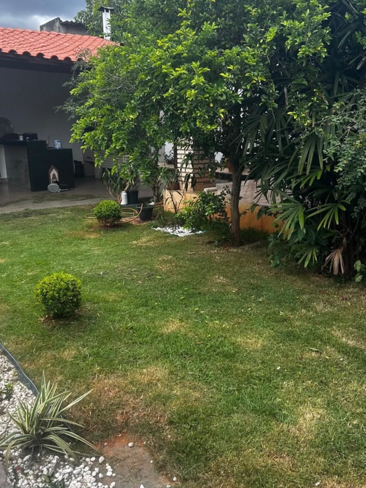
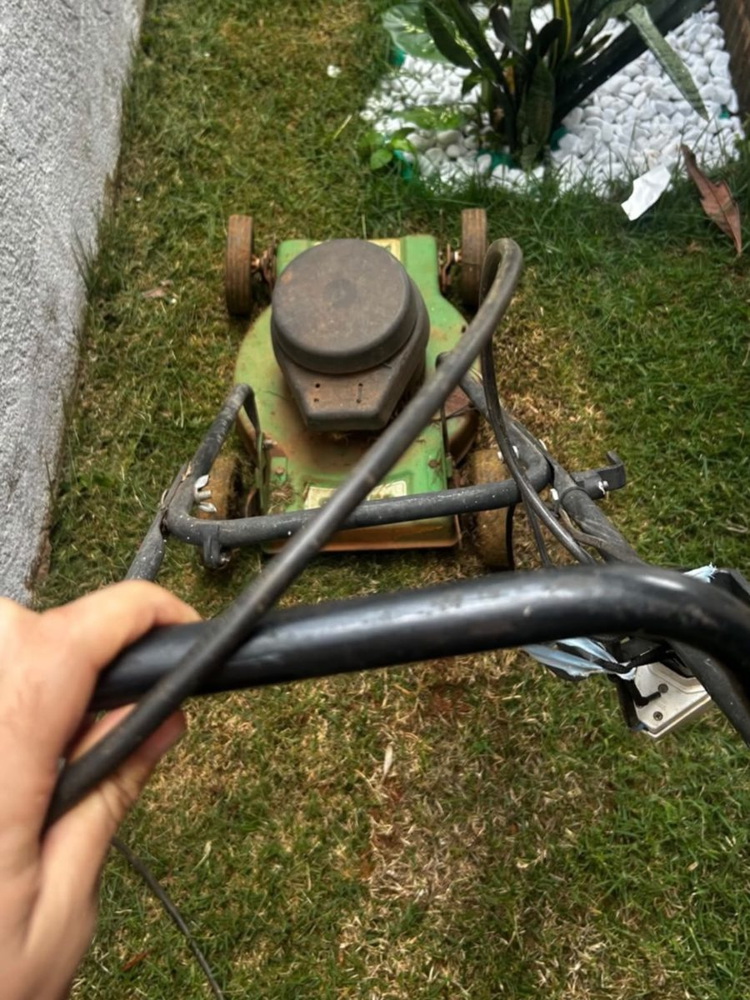
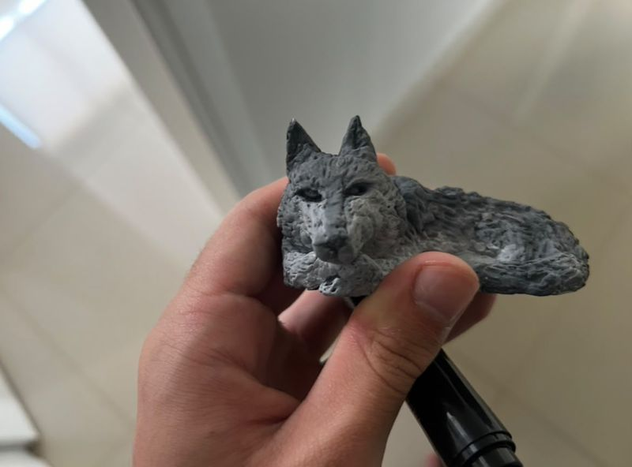
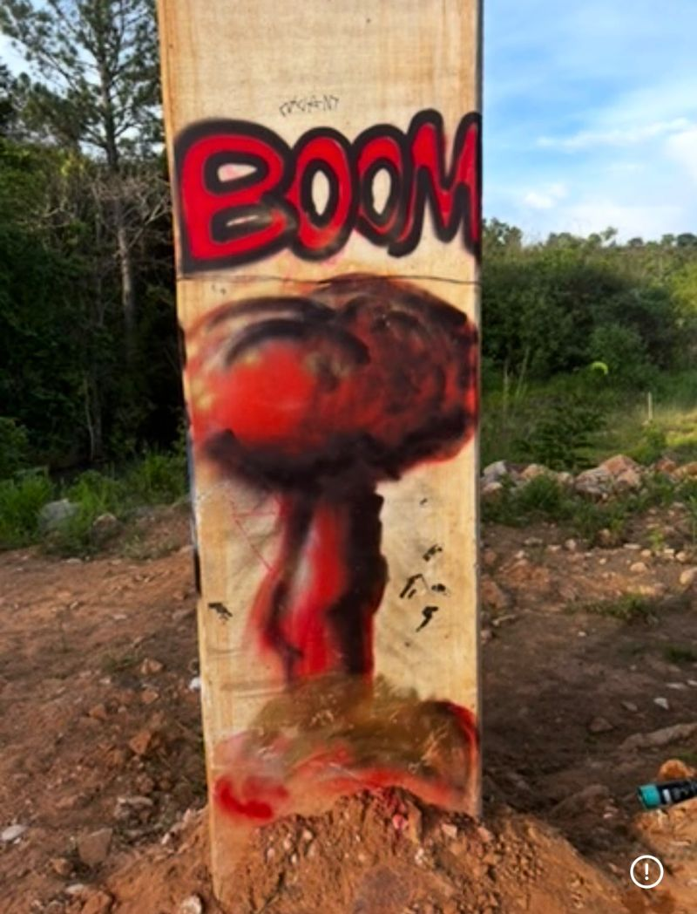
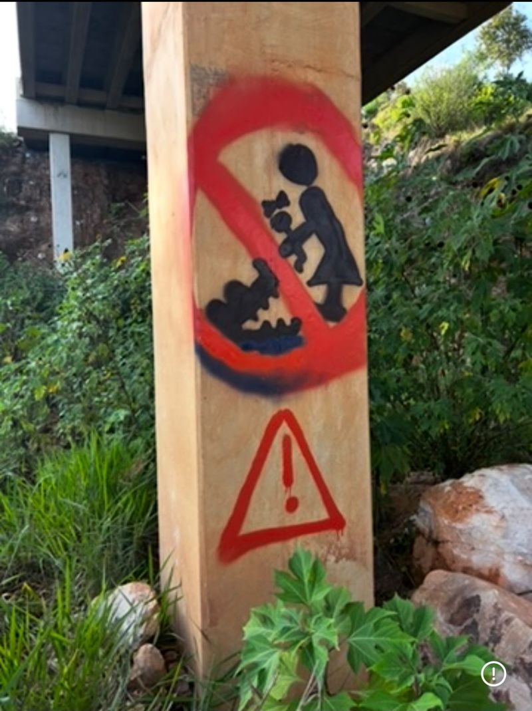
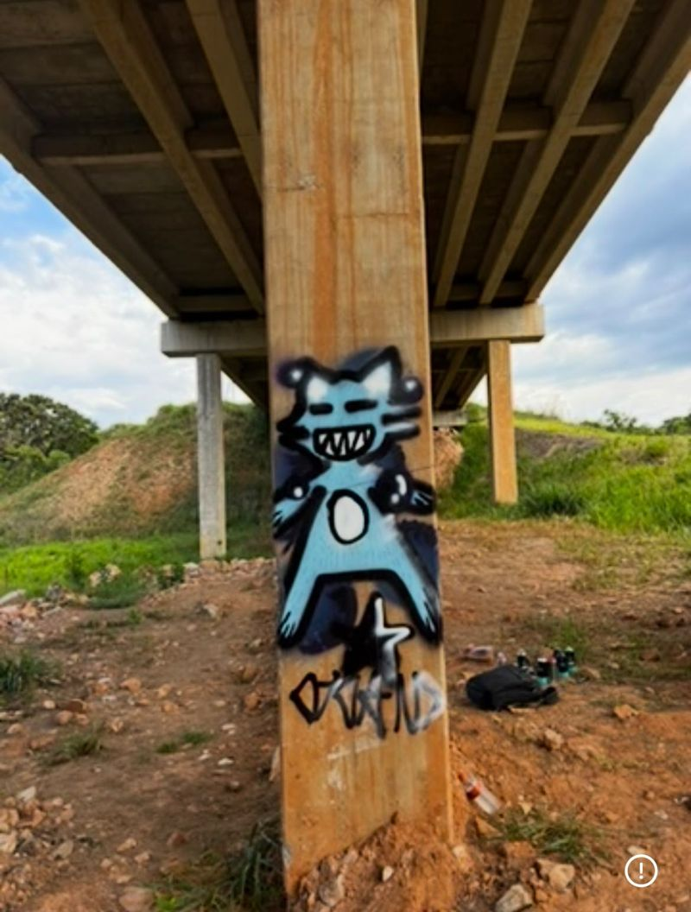
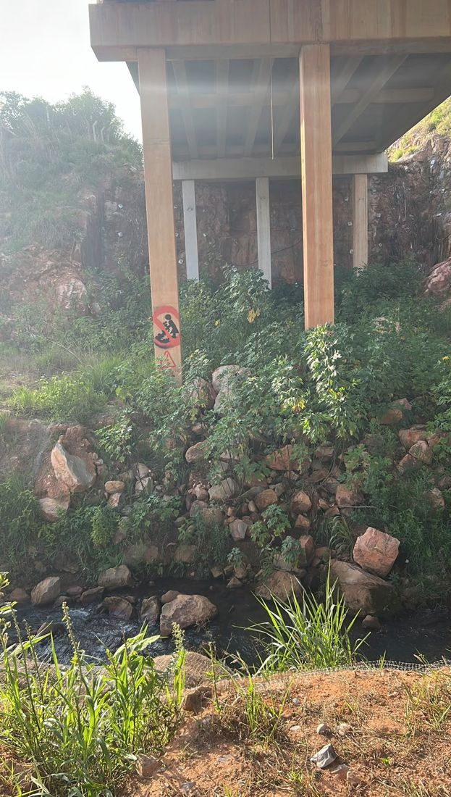

Instrumentos
Um dos meus hobbies são tocar guitarra, violão e piano, pratico desde os meus 15 anos no meu tempo livre e acho uma atividade boa pra gerar autoconhecimento.
Olá, eu sou
Estudante em busca de aprender, criar e crescer.

Olá, meu nome é Juan Gabriel e sou estudante de ciência da computação pela UDF, estou atualmente no segundo semestre e nesse site você pode conhecer um pouco mais sobre o meu pessoal e meus hobbies que envolvem principalmente maneiras de expressão.
Um dos meus hobbies são tocar guitarra, violão e piano, pratico desde os meus 15 anos no meu tempo livre e acho uma atividade boa pra gerar autoconhecimento.


Recentemente comecei com serviços de jardinagem e costumo trabalhar principalmente em jardins com grandes áreas de gramínea.





Também venho buscando explorar um lado criativo mais físico com esculturas e grafites.